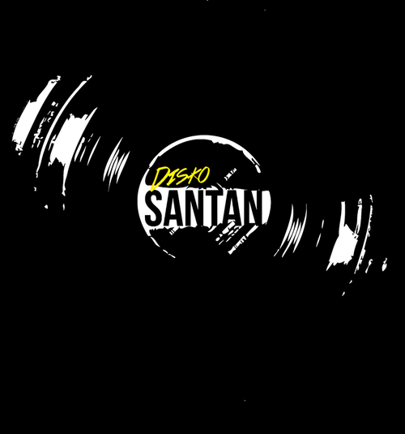
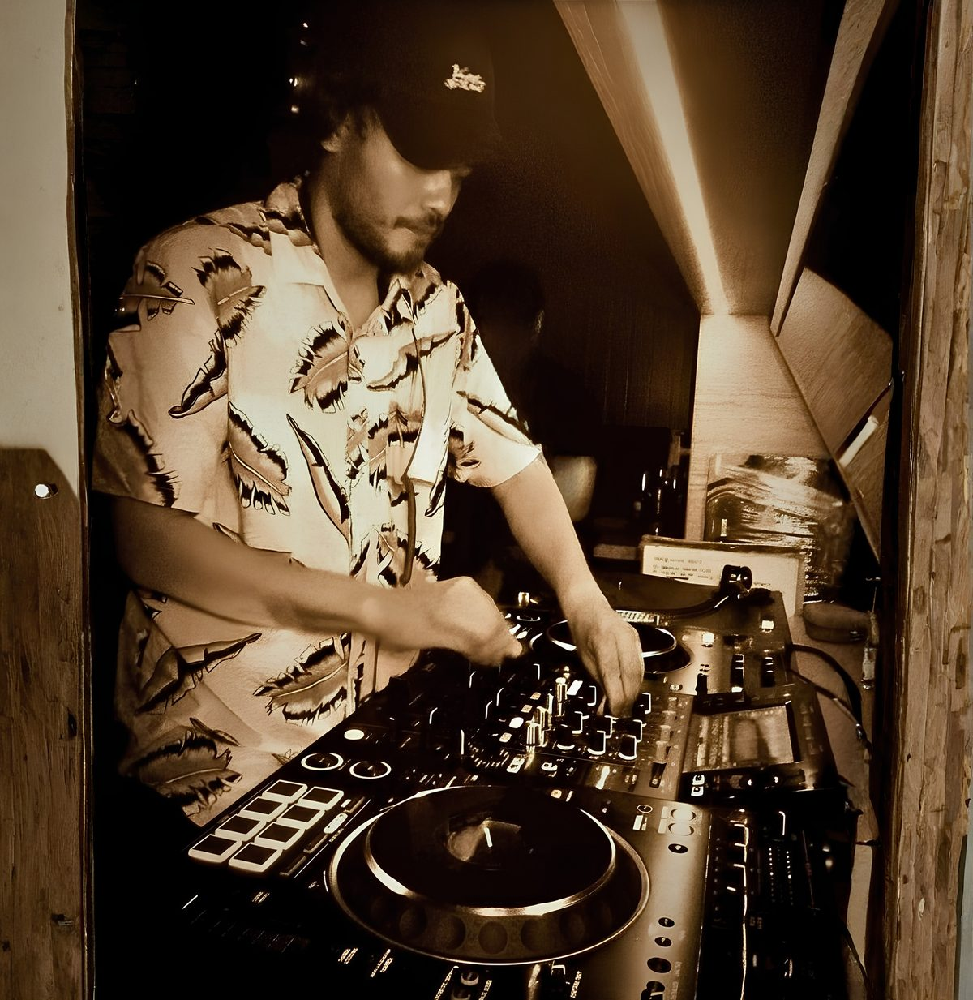
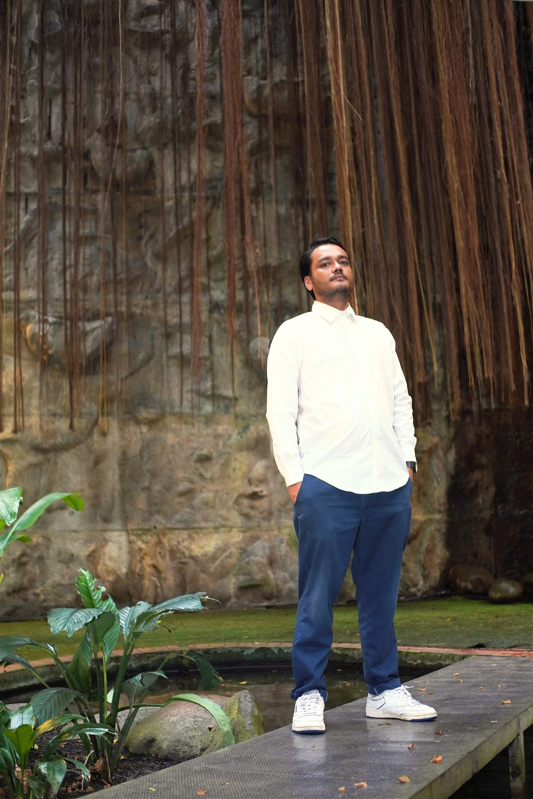
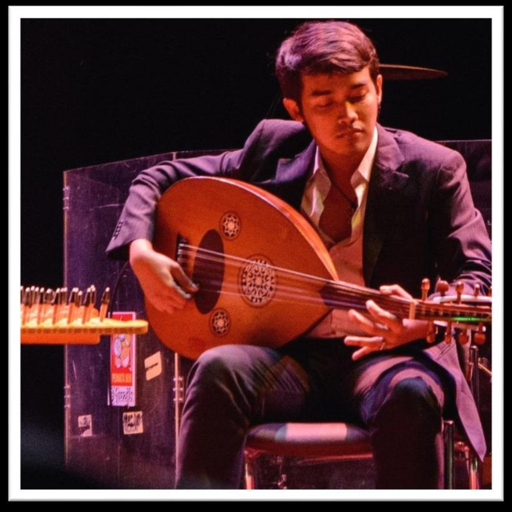
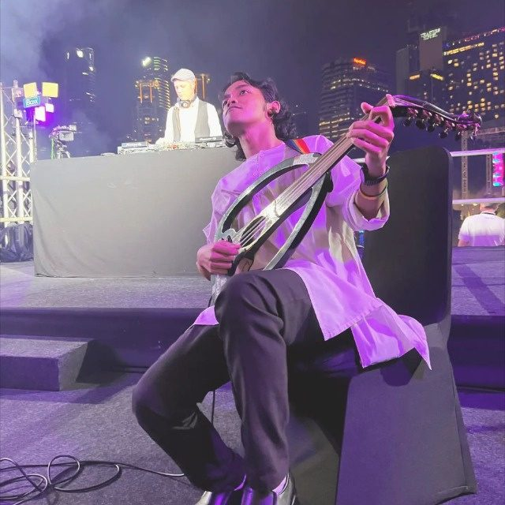
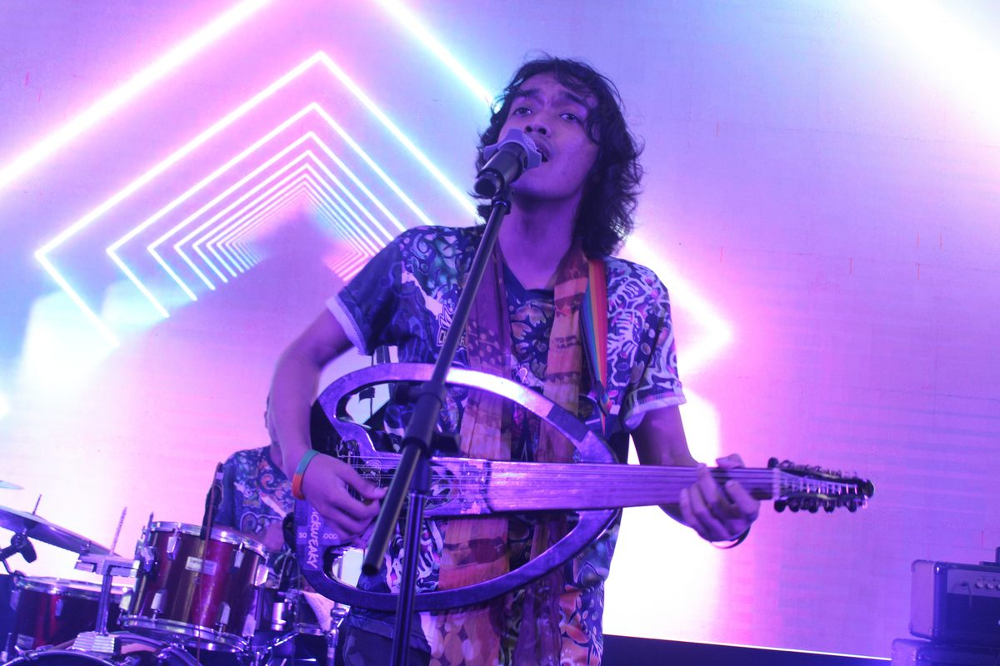
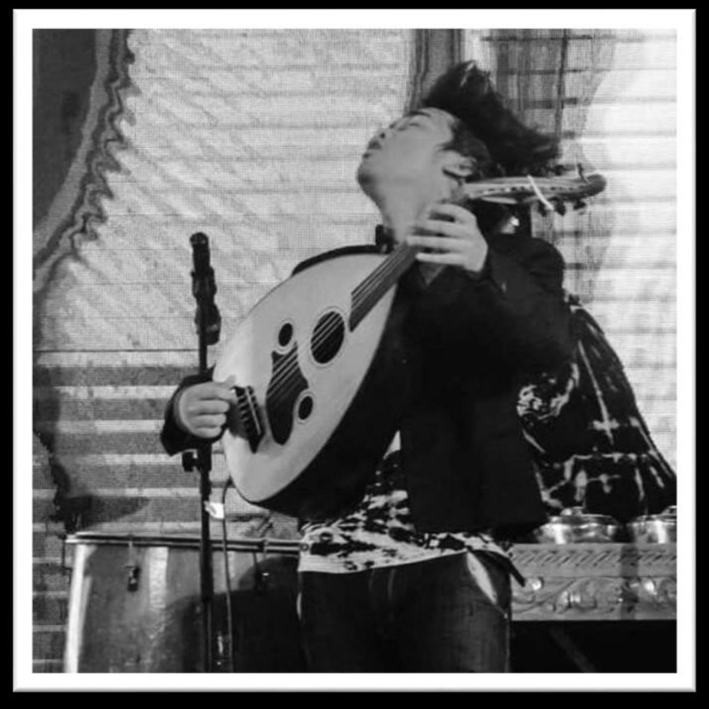

The concept
One booth,
two roots.
Disko Santan is a Kuala Lumpur music initiative built around digging, selecting, and cultural curation — moving across dark organic techno, acid, dub cumbia, melayu asli, jazz, and global roots music. Luk Ahmad is an ASWARA-trained oud player and composer whose instrument carries the maqam tradition into synthesis, looping, and electronic texture.
Together, the two build a live hybrid set: Luk's oud and voice sit inside Maliqmal's selection, tracing a single lineage from acoustic string to soundsystem — a conversation between the ancient and the contemporary rather than a DJ set with a guest musician on top.

Disko Santan
Maliqmal
Maliqmal is the driving force behind Disko Santan Soundsystem, an independent music initiative operating at the intersection of sonic architecture and heritage preservation — digging deep to find regional sounds, trace the musicians behind them, and carry that history into the room before sharing it with the world. More than a DJ set, Disko Santan builds spaces for people to listen deeply, connect genuinely, and trace the roots of sound across Southeast Asia.
- Opened for Grace Jones — Ombak Festival, 2024
- Opened for DJ Kirollus (Asian Tour) — Louie's Bar, June 2025
- Six-month residency — Else Hotel Kuala Lumpur, Sept 2025–Mar 2026
- Founder, Pusar — community listening & pop-up platform, 2026–ongoing
- Curated Art FAS by Yayasan Hasanah — funded KL Festival activation, May 2026
Oud Player · Songwriter · Composer
Luk Ahmad
Lukman Hakim Ahmad Azam moves between acoustic tradition and electronic exploration. Trained at ASWARA across music performance, Mak Yong theatre, and Bangsawan — Malaysia's oldest living stage traditions — he treats the oud as a living voice: rooted in maqam heritage, increasingly opened to synthesis and looping. A composer since age 15, his work has been performed at national dance festivals, rearranged by established ensembles, and placed in international showcases.
- 1st Runner-Up — BAC Rock & Pop Competition, Ho Chi Minh City, 2015 (with Floor88)
- Zapin Melor — original composition, Main Zapin national dance festival
- Top-10 finalist — Amir Jahari singer-songwriter showcase
- Regular performer — RUNS, Endee Ahmad, Otam, Daya Tebrau, Uda dan Dara, Duwamusiq
- Member — Feel Tu Penting (#FTP) indie music community
Press shots
On the booth,
on the strings.
High-resolution originals available on request — see booking contact below.






Latest Mix
Listen
to the sound.
Organic 2nd July — A live hybrid set exploring the oud through electronic synthesis and dub.
Technical rider
Set formats & signal flow.
Hybrid Vinyl & CDJ
- 2× Pioneer CDJ-2000NXS2 (or equiv.)
- 1× Pioneer DJM-900NXS2 (or equiv.)
- 1× Technics SL-1200 MK + Ortofon Concorde DJ needles
- Phono pre-amp or mixer phono input required
- USB sticks as backup · Maliqmal brings own vinyl crate
Vinyl Set
- 2× Technics SL-1200 MK (or equiv.) turntables
- 1× Pioneer DJM-900NXS2 (or equiv.)
- Ortofon Concorde DJ needles · phono pre-amp required
- No CDJs required · Maliqmal brings own vinyl crate
Digital CDJ Set
- 2× Pioneer CDJ-2000NXS2 (or equiv.)
- 1× Pioneer DJM-900NXS2 (or equiv.)
- USB sticks provided by artist
- RCA or XLR output to main PA
- Preferred for touring & festival contexts
venue sound engineer
- Soundcheck: minimum 30 minutes before doors. Luk stage left/centre, DJ booth stage right/centre-rear.
- Monitor mix: vocal + oud only — no DJ bleed unless specifically requested.
- PA: full-range appropriate to venue size, adequate sub-bass, min. 1kW/100 capacity.
- Power: minimum 4× grounded 13A sockets (2 DJ, 1 Luk, 1 spare). Surge protector preferred.
- Booth lighting for comfort during performance — no strobe directly at DJ position.
- Water + light refreshments on or near stage. Halal food only.
- Confirm set format min. 5 days before event. Travel & accommodation agreed separately per engagement.
Selected curation history
Rooms they've
already built.
Booking & links